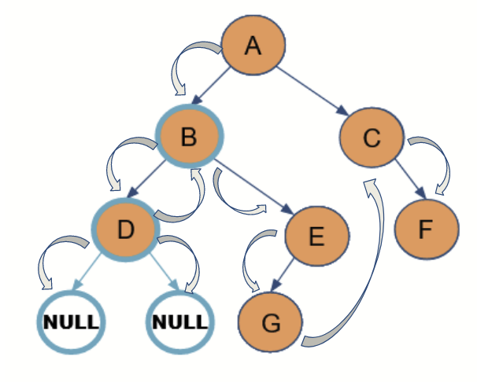

class Node:
# Nodes for a binary tree
def __init__(self, data):
self.left = None
self.right = None
self.data = data
# Insert Nodes
def insertLeft(self, data):
if self.left is None:
self.left = Node(data)
else:
raise Exception("Value already filled")
def insertRight(self, data):
if self.right is None:
self.right = Node(data)
else:
raise Exception("Value already filled")Tree Data Structure
Introduction to Tree Data Structure
A tree is a collection of nodes connected by directed (or undirected) edges. It is a nonlinear data structure, compared to arrays, linked lists, stacks and queues which are linear data structures.
Important Keywords
- Path − Path refers to the sequence of nodes along the edges of a tree.
- Root − The node at the top of the tree is called root. * One root per tree * One path from the root node to any node.
- Edge - connects two nodes to show the relationship between nodes.
- Key - Represents the value in the node
- Parent − Any node except the root node has one edge upward
- Child − Node below a given node connected by its edge downward
- Leaf − The node which does not have any child node
- Subtree − Subtree represents the descendants of a node.

Types of Tree Data Structures
General Tree
General tree is a tree where each node may have zero or more children(a binary tree is a specialized case of a general tree). A data structure where there are no constraints on the hierarchical structure. General trees are used to model applications such as file systems.

Tree Traverse(Pre-In-Post)
Traversal - Process of visiting all nodes of a tree
Unlike linear data structures (arrays, lists, queues, stacks, etc.), trees have multiple ways to be traversed.
Three main ways:
Pre-order:
root → left subtree → right subtree (result: A, B, D, E, G, C, F)
In-order:
left subtree → root → right subtree (result: D, B, G, E, A, C, F)
Post-order: left subtree → right subtree → root (result: D, G, E, B, F, C, A)
class Tree(Node):
def __init__(self,data):
super().__init__(data)
# Traversal ==============================================================================================================
# Preorder traversal-------------------------------------------------------------------------------------------------------
# Root -> Left -> Right
def PreorderTraversal(self, root):
res = []
if root:
res.append(root.data) # start with root node valude
res = res + self.PreorderTraversal(root.left) # then recursively iterate through left subtrees
res = res + self.PreorderTraversal(root.right) # then finally, recursively iterate through right subtrees
return res
# Inorder traversal-------------------------------------------------------------------------------------------------------
# Left -> Root -> Right
def InorderTraversal(self, root):
res = []
if root:
res = self.InorderTraversal(root.left) # start by recursively iterating through left subtrees
res.append(root.data) # then include root node value
res = res + self.InorderTraversal(root.right) # then finally, recursively iterate through right subtrees
return res
# Postorder traversal------------------------------------------------------------------------------------------------------
# Left -> Right -> Root
def PostorderTraversal(self, root):
res = []
if root:
res = self.PostorderTraversal(root.left) # start by recursively iterating through left subtrees
res = res + self.PostorderTraversal(root.right) # then recursively iterate through right subtrees
res.append(root.data) # then include root node value last
return res# recreate example tree
root = Tree("A")
root.insertLeft("B")
root.left.insertLeft("D")
root.left.insertRight("E")
root.left.right.insertLeft("G")
root.insertRight("C")
root.right.insertRight("F")# test for yourself
print(root.left.left.data) # should be "D"
print(root.right.data) # should be "C"D
CPre-order
Visit root node Recursively traverse left subtree Recursively traverse right subtree
it’s generally going from top to bottom then left to right

# Preorder traversal: Root -> Left -> Right
print(root.PreorderTraversal(root)) # should be [A, B, D, E, G, C, F]['A', 'B', 'D', 'E', 'G', 'C', 'F']In-order:
- Recursively traverse left subtree
- Visit root node
- Recursively traverse right subtree
It’s generally sweeping through the tree from left to right
# Inorder traversal: Left -> Root -> Right
print(root.InorderTraversal(root)) # should be [D, B, G, E, A, C, F]['D', 'B', 'G', 'E', 'A', 'C', 'F']Post-order:
- Recursively traverse left subtree
- Recursively traverse right subtree
- Visit root node
It’s generally going from left to right then bottom to top
# Postorder traversal: Left -> Right -> Root
print(root.PostorderTraversal(root)) # should be [D, G, E, B, F, C, A]['D', 'G', 'E', 'B', 'F', 'C', 'A']Heap Trees
Max Heap Tree:
If any given node is always greater than its child node/s and the key of the root node is the largest among all other nodes. This property is also called max heap property.
#Max heap
import sys
class Tree:
def __init__(self, maxsize):
self.maxsize = maxsize
self.size = 0
self.Heap = [0] * (self.maxsize + 1)
self.Heap[0] = sys.maxsize
self.FRONT = 1
# Function to return the position of parent for the node currently at position
def parent(self, pos):
return pos // 2
# Function to return the position of the left child for the node currently at position
def leftChild(self, pos):
return 2 * pos
# Function to return the position of the right child for the node currently at position
def rightChild(self, pos):
return (2 * pos) + 1
# Function that returns true if the passed node is a leaf node
def isLeaf(self, pos):
if pos >= (self.size//2) and pos <= self.size:
return True
return False
# Function to swap two nodes of the heap
def swap(self, fpos, spos):
self.Heap[fpos], self.Heap[spos] = (self.Heap[spos],
self.Heap[fpos])
# Function to heapify the node at pos
def maxHeapify(self, pos):
# If the node is a non-leaf node and smaller than any of its child
if not self.isLeaf(pos):
if (self.Heap[pos] < self.Heap[self.leftChild(pos)] or
self.Heap[pos] < self.Heap[self.rightChild(pos)]):
# Swap with the left child and heapify the left child
if (self.Heap[self.leftChild(pos)] > self.Heap[self.rightChild(pos)]):
self.swap(pos, self.leftChild(pos))
self.maxHeapify(self.leftChild(pos))
# Swap with the right child and heapify the right child
else:
self.swap(pos, self.rightChild(pos))
self.maxHeapify(self.rightChild(pos))
# Function to insert a node into the heap
def insert(self, element):
if self.size >= self.maxsize:
return
self.size += 1
self.Heap[self.size] = element
current = self.size
while (self.Heap[current] >
self.Heap[self.parent(current)]):
self.swap(current, self.parent(current))
current = self.parent(current)
# Function to print the contents of the heap
def Print(self):
for i in range(1, (self.size // 2) + 1):
print("PARENT : " + str(self.Heap[i]) +
" LEFT CHILD : " + str(self.Heap[2 * i]) +
" RIGHT CHILD : " + str(self.Heap[2 * i + 1]))
# Function to remove and return the maximum element from the heap
def Extract_Max(self):
popped = self.Heap[self.FRONT]
self.Heap[self.FRONT] = self.Heap[self.size]
self.size -= 1
self.maxHeapify(self.FRONT)
return popped
# Driver Code
if __name__ == "__main__":
print('The maxHeap is ')
maxHeap = Tree(15)
maxHeap.insert(5)
maxHeap.insert(3)
maxHeap.insert(17)
maxHeap.insert(10)
maxHeap.insert(75)
maxHeap.insert(14)
maxHeap.insert(1)
maxHeap.insert(22)
maxHeap.insert(9)
maxHeap.insert(85)
maxHeap.Print()
print("The Max val is " + str(maxHeap.Extract_Max()))The maxHeap is
PARENT : 85 LEFT CHILD : 75 RIGHT CHILD : 14
PARENT : 75 LEFT CHILD : 17 RIGHT CHILD : 22
PARENT : 14 LEFT CHILD : 5 RIGHT CHILD : 1
PARENT : 17 LEFT CHILD : 3 RIGHT CHILD : 9
PARENT : 22 LEFT CHILD : 10 RIGHT CHILD : 0
The Max val is 85Min Heap Tree:
If any given node is always smaller than the child node/s and the key of the root node is the smallest among all other nodes. This property is also called min heap property.
#Min Heap
import sys
class MinHeap:
def __init__(self, maxsize):
self.maxsize = maxsize
self.size = 0
self.Heap = [0]*(self.maxsize + 1)
self.Heap[0] = -1 * sys.maxsize
self.FRONT = 1
# Function to return the position of parent for the node currently at position
def parent(self, pos):
return pos//2
# Function to return the position of the left child for the node currently at position
def leftChild(self, pos):
return 2 * pos
# Function to return the position of the right child for the node currently at position
def rightChild(self, pos):
return (2 * pos) + 1
# Function that returns true if the passed node is a leaf node
def isLeaf(self, pos):
return pos*2 > self.size
# Function to swap two nodes of the heap
def swap(self, fpos, spos):
self.Heap[fpos], self.Heap[spos] = self.Heap[spos], self.Heap[fpos]
# Function to heapify the node at pos
def minHeapify(self, pos):
# If the node is a non-leaf node and greater than any of its child
if not self.isLeaf(pos):
if (self.Heap[pos] > self.Heap[self.leftChild(pos)] or
self.Heap[pos] > self.Heap[self.rightChild(pos)]):
# Swap with the left child and heapify the left child
if self.Heap[self.leftChild(pos)] < self.Heap[self.rightChild(pos)]:
self.swap(pos, self.leftChild(pos))
self.minHeapify(self.leftChild(pos))
# Swap with the right child and heapify the right child
else:
self.swap(pos, self.rightChild(pos))
self.minHeapify(self.rightChild(pos))
# Function to insert a node into the heap
def insert(self, element):
if self.size >= self.maxsize :
return
self.size+= 1
self.Heap[self.size] = element
current = self.size
while self.Heap[current] < self.Heap[self.parent(current)]:
self.swap(current, self.parent(current))
current = self.parent(current)
# Function to print the contents of the heap
def Print(self):
for i in range(1, (self.size//2)+1):
print(" PARENT : "+ str(self.Heap[i])+" LEFT CHILD : "+
str(self.Heap[2 * i])+" RIGHT CHILD : "+
str(self.Heap[2 * i + 1]))
# Function to build the min heap using the minHeapify function
def minHeap(self):
for pos in range(self.size//2, 0, -1):
self.minHeapify(pos)
# Function to remove and return the minimum element from the heap
def Extract_Min(self):
popped = self.Heap[self.FRONT]
self.Heap[self.FRONT] = self.Heap[self.size]
self.size-= 1
self.minHeapify(self.FRONT)
return popped
# Driver Code
if __name__ == "__main__":
print('The minHeap is ')
minHeap = MinHeap(15)
minHeap.insert(5)
minHeap.insert(3)
minHeap.insert(17)
minHeap.insert(10)
minHeap.insert(75)
minHeap.insert(14)
minHeap.insert(1)
minHeap.insert(22)
minHeap.insert(9)
minHeap.minHeap()
minHeap.Print()
print("The Min val is " + str(minHeap.Extract_Min()))The minHeap is
PARENT : 1 LEFT CHILD : 5 RIGHT CHILD : 3
PARENT : 5 LEFT CHILD : 9 RIGHT CHILD : 75
PARENT : 3 LEFT CHILD : 17 RIGHT CHILD : 14
PARENT : 9 LEFT CHILD : 22 RIGHT CHILD : 10
The Min val is 1Time Complexities:
Heap Data Structure:
- Remove, Insert - \(O(logn)\)
- Search - \(O(n)\)
- Peek - \(O(1)\)
Applications:
- File systems for:
- Directory structure used to organize subdirectories and files
- The mechanism used to allocate and link blocks of data on the storage device
- Class hierarchy or “inheritance tree” showing the relationships among classes in object-oriented programming; multiple inheritance produces non-tree graphs 3.Natural language processing:
- Parse trees
- Modeling utterances in a generative grammar
- Dialogue tree for generating conversations
- Search trees store data in a way that makes an efficient search algorithm possible via tree traversal
- A binary search tree is a type of binary tree
Learning Experience
Vamsi- This project made me deep dive into the concept of tree data structure for the first time in my academics. Made me understand what all the different applications use trees and its implementation in the real time situations. It made me to do handsom practice of the code and play with it. It also helped me to understand how different is this data structure different from all others.
Sanyukta - I learned how to create a heap tree and navigate it with min/max and its applications.
Jasmine - In general I realized what a powerful and interesting data structure trees (or any of the non-linear data structures) are. After this implementation work in particular, it became even more clear how difficult it would be to try to traverse through a general tree (as opposed to a binary tree). And I also realized it’s difficult to visualize a tree through it’s code alone. This exercise also helped further emphasize how useful and powerful class methods in Python are.
References
General tree
https://www.cs.cmu.edu/~clo/www/CMU/DataStructures/Lessons/lesson4_1.htm
https://towardsdatascience.com/8-useful-tree-data-structures-worth-knowing-8532c7231e8c
Tree traversal
https://www.geeksforgeeks.org/tree-traversals-inorder-preorder-and-postorder/
https://www.tutorialspoint.com/data_structures_algorithms/tree_traversal.htm